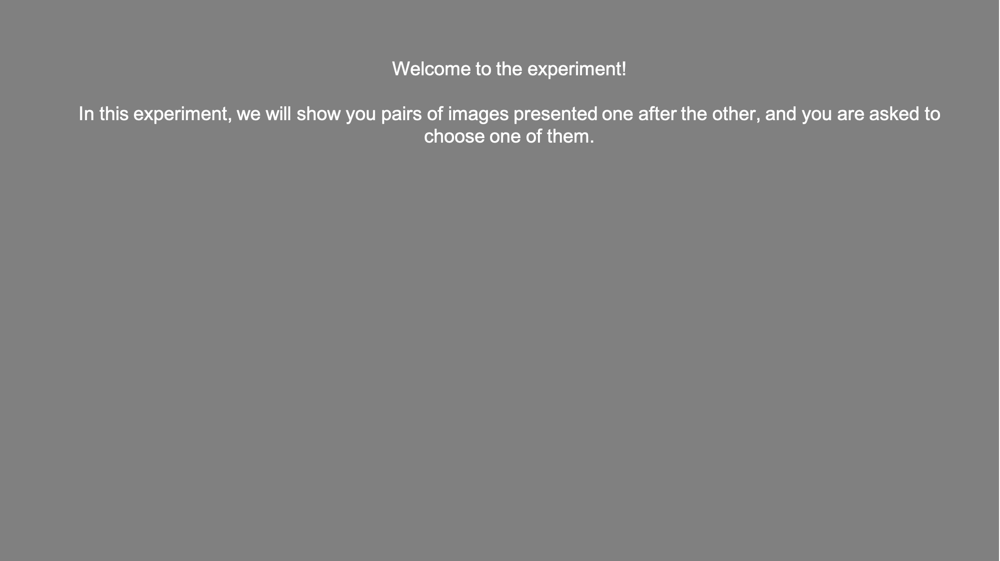

<!doctype html>
<html>
  <head>
    <title>Columbia University Psychology Experiment</title>
    <script src="jspsych-6.0.5/jspsych.js"></script>
    <script src="Tools/Functions.js"></script>
    <script src="jspsych-6.0.5/plugins/jspsych-html-keyboard-response.js"></script>
    <script src="jspsych-6.0.5/plugins/jspsych-instructions.js"></script>
    <script src="jspsych-6.0.5/plugins/jspsych-image-keyboard-response.js"></script>
    <script src="jspsych-6.0.5/plugins/jspsych-survey-text.js"></script>
    <script src="jspsych-6.0.5/plugins/jspsych-survey-likert.js"></script>
    <script src="jspsych-6.0.5/plugins/jspsych-survey-multi-choice.js"></script>
    <script src="jspsych-6.0.5/plugins/jspsych-survey-multi-select.js"></script>
    <script src="jspsych-6.0.5/plugins/jspsych-html-slider-response.js"></script>
    <script src="jspsych-6.0.5/plugins/jspsych-fullscreen.js"></script>
    <script src="jspsych-6.0.5/plugins/jspsych-html-button-response.js"></script>
    <link href="jspsych-6.0.5/css/jspsych.css" rel="stylesheet" type="text/css"></link>
    <link href="Tools/myCSSstyle.css" rel="stylesheet" type="text/css"></link>
    <style>
        .jspsych-display-element {font-size: 25px;}
    </style>
  </head>
  <body> </body>
  <script>


// =============================================================================
// PRE LOAD TASK IMAGES
// =============================================================================

// load task images
TI_stimuli = ['Stimuli/Fractals_stims/L.jpg',
              'Stimuli/Fractals_stims/M.jpg',
              'Stimuli/Fractals_stims/N.jpg',
              'Stimuli/Fractals_stims/O.jpg',
              'Stimuli/Fractals_stims/P.jpg',
              'Stimuli/Fractals_stims/Q.jpg',
              'Stimuli/Fractals_stims/R.jpg']

Instructions_stimuli = ['Stimuli/Instructions/ti_instructions1.png',
                        'Stimuli/Instructions/ti_instructions2.png',
                        'Stimuli/Instructions/ti_instructions2_init.png',
                        'Stimuli/Instructions/ti_instructions3.png',
                        'Stimuli/Instructions/ti_instructions4.png',
                        'Stimuli/Instructions/ti_instructions2_init_d_first.png',
                        'Stimuli/Instructions/ti_instructions2_init_d_second.png',
                        'Stimuli/Instructions/ti_instructions2_d_first.png',
                        'Stimuli/Instructions/ti_instructions2_d_second.png',
                        'Stimuli/Instructions/ti_instructions2_init_d_first_responseS2.png',
                        'Stimuli/Instructions/ti_instructions2_init_d_second_responseS2.png',
                        'Stimuli/Instructions/ti_instructions2_d_first_responseS2.png',
                        'Stimuli/Instructions/ti_instructions2_d_second_responseS2.png',
                        'Stimuli/Instructions/ti_instructions2_responseS2.png',
                        'Stimuli/Instructions/ti_instructions2_init_responseS2.png'];

Extra_stims = ['Stimuli/Feedback/correct.png',
               'Stimuli/Feedback/incorrect.png',
               'Stimuli/Initiation/initiation.png'];

// prepare pre-loaded images
task_images = TI_stimuli.concat(Instructions_stimuli).concat(Extra_stims);


// =============================================================================
// PARAMETERS
// =============================================================================

var is_debug                       = 0;
var is_server                      = 1;
var n_reps_per_trial_type_training = 12;
var n_reps_per_trial_type_test     = 6; // 6 or 7
var end_node                       = 7; // how many letters we are covering
var n_blocks_training              = 3;
var n_blocks_test                  = n_reps_per_trial_type_test; // we keep number of blocks similar to number of trial types, so each block will present all trial types in a randomized order
var n_total_blocks                 = n_blocks_training + n_blocks_test;
var timing_S1                      = 250;
var timing_S2                      = timing_S1;
var timing_ISI                     = 150; // V4 includes 500 ms, V5 = 1000, V6 = 150, all other versions are 2000;
var timing_max_response            = 2000;
var timing_feedback                = 1000;
var timing_too_slow                = 1000;
var timing_time_out                = 2000;
var timing_ITI                     = 1000;
var timing_max_self_initiation     = 2000;
var max_earnings                   = 5; // maximum dollar earnings
var keys_instructions              = [' '];
var keys_start_exp                 = [' '];
var keys_decisions                 = ['d', 'k']
var timeline                       = [];
var decisions_timeline             = { timeline: []};
var is_self_initiation             = 0; // do we want participants to self initiate their trials
var is_keys_instructions           = 1; // do we want to explicitly instruct subjects about the correspondance of keys and responses
var is_response_during_s2          = 1; // do we want to instruct subs that they can respond during the second stimulus presentation.
var stim_path                      = "Stimuli/Fractals_stims";
if (is_response_during_s2 == 1){
  timing_max_response = timing_max_response - timing_S2;
}

if (is_debug==1){
  n_reps_per_trial_type_training = 3;
  n_reps_per_trial_type_test = 3;
  timing_ISI = 100;
  timing_max_response = 500;
  timing_feedback = 100;
  timing_time_out = 100;
  timing_ITI = 500;
}

// assign subject id
var subID = Math.floor(Math.random() * 90000) + 10000; // random 5-digit number

// randomize the assignment of stims to keys
if (subID % 2 == 0){
  var key_S1 = keys_decisions[0];
  var key_S2 = keys_decisions[1];
} else {
  var key_S1 = keys_decisions[1];
  var key_S2 = keys_decisions[0];
}

// =============================================================================
// CREATE DATA FRAME
// =============================================================================

// create all possible trial types, and tag them into four groups
var trial_types = [];
trial_types = transpose([repmat(range(1,end_node),end_node), repmat(range(1,end_node),end_node).sort()]) // we create an array of [1,1,1,1,1,1,1,2,2,2...],[1,2,3,4,5,6,7,1,2,3...]
trial_types.forEach((element, index) => {
  if (trial_types[index][0] == trial_types[index][1]) {
    var curr_trial_type = "same";
  } else if (Math.abs(trial_types[index][0]-trial_types[index][1]) == 1){
    var curr_trial_type = "adjacent";
  } else {
    var curr_trial_type = "non_adjacent";
  }
  trial_types[index][2] = curr_trial_type;
});
// add letter trial type
var left_letter = []; var right_letter = [];
trial_types.forEach((element, index) => {
  switch (trial_types[index][0]) {
    case 1: left_letter = "A"; break;
    case 2: left_letter = "B"; break;
    case 3: left_letter = "C"; break;
    case 4: left_letter = "D"; break;
    case 5: left_letter = "E"; break;
    case 6: left_letter = "F"; break;
    case 7: left_letter = "G"; break;
  }
  switch (trial_types[index][1]) {
    case 1: right_letter = "A"; break;
    case 2: right_letter = "B"; break;
    case 3: right_letter = "C"; break;
    case 4: right_letter = "D"; break;
    case 5: right_letter = "E"; break;
    case 6: right_letter = "F"; break;
    case 7: right_letter = "G"; break;
  }
  trial_types[index][3] = left_letter + right_letter; // e.g., 'AB', 'BB', 'BA', ...
});

// create data frames
var training = []; var test = [];
training = repmat(JSON.parse(JSON.stringify(trial_types.filter(a => a[2] == "adjacent"))), n_reps_per_trial_type_training);
test = repmat(JSON.parse(JSON.stringify(trial_types.filter(a => a[2] != "same"))), n_reps_per_trial_type_test);

// add trial type
training.forEach((element, index) => {training[index][4] = "training"});
test.forEach((element, index) => {test[index][4] = "test"});

// add block info
block = repmat(range(1,n_blocks_training), training.length/n_blocks_training).sort().concat(
        repmat(range(1+n_blocks_training,n_blocks_test+n_blocks_training), test.length/n_blocks_test).sort())

// combine
var trials = training.concat(test);

// randomize the assignment of images to conditions
images = ["L.jpg", "M.jpg", "N.jpg", "O.jpg", "P.jpg", "Q.jpg","R.jpg"];
images = shuffle(images);
trials.forEach((element, index) => {
  // assign the images according to their position in the images vector
  trials[index][5] = images[trials[index][0]-1];
  trials[index][6] = images[trials[index][1]-1];
});

// create object
ti_trials_tmp = [];
for (t=0; t<trials.length; t++){
  ti_trials_tmp[t] = {block: block[t],
                      trial: NaN,
                      phase: trials[t][4],
                      group_type: trials[t][2],
                      pair_type: trials[t][3],
                      S1_stim: trials[t][0],
                      S2_stim: trials[t][1],
                      S1_img: trials[t][5],
                      S2_img: trials[t][6],
                      S1_img_path: stim_path + "/" + trials[t][5],
                      S2_img_path: stim_path + "/" + trials[t][6]
                    }
                  }

// shuffle within blocks
ti_trials = [];
for (b=1; b<n_blocks_training+n_blocks_test+1; b++){
  curr_block = shuffle(ti_trials_tmp.filter(a => a.block == b));
  ti_trials = ti_trials.concat(curr_block);
}

// add trial number
ti_trials.forEach((item, i) => {ti_trials[i].trial = i});


// =============================================================================
// CSS FOR STIMS PRESENTATION
// =============================================================================

var single_stim = '<table class="table"><tr>\
                   <td class="fixation"></td>\
                   <td></td>\
                   <td class="fixation"></td></tr></table>';

// =============================================================================
// CREATE DIFFERENT TRIAL TYPES
// =============================================================================

// ------------------------------ Full Screen ----------------------------------

var fullscreen = {
  type: 'fullscreen',
  fullscreen_mode: true,
  message: '<p>Welcome to our study!<br>' +
           'Our study requires your undivided attention throughout the entire experiment.</br>'+
           'Please note that exiting full screen mode, responding randomly, or responding to fewer than 90% of trials will cause your HIT to be rejected.<br></br>'+
            'To switch to full screen and start the experiment, please press the button below.</p>',
  on_finish: function(){
    // add columns to data
    jsPsych.data.addProperties({
      warning: 0,
      missed_checkup: 0,
      PID: subID }) // generate a random 5-char ID, because we can't save MTurk worker id.
  }, // function on_finish
  data: {ttype: 'full_screen', start_time: timeStamp()}
}
timeline.push(fullscreen)

// ------------------------------ Instructions ---------------------------------

// repeat instructions screen
var missed_instruction_checkup = {
      type: 'html-keyboard-response',
      data: {ttype: 'missed_instruction_checkup'},
      stimulus: "Sorry, you missed one or more questions.</br></br>"+
                "Please press the space bar to repeat the instructions.",
      choices: keys_instructions,
      response_ends_trial: true,
      on_finish: function(data){
        data.missed_checkup = 1
      } // on_finish
    } // missed_instruction_checkup

// If participants pass the comprehension check, they can start the phase.
// For scanned participants, this appears immediately after the quiz end.
var passed_instructions = {
    type: 'html-keyboard-response',
    stimulus: "Great job!<br></br>Please press the space bar to start the experiment",
    choices: keys_start_exp,
    response_ends_trial: true,
    data: {ttype: "start_exp"},
    trial_duration:null
}

// Instructions
if (is_keys_instructions == 0) {
  keys_instructions = ""
} else {
  if (subID % 2 == 0) {
    keys_instructions = "_d_first"
  } else {
    keys_instructions = "_d_second"
  }
}
if (is_self_initiation == 0) {
  self_initiation = ""
} else {
  self_initiation = "_init"
}
if (is_response_during_s2 == 0){
  response_during_s2 = ""
} else {
  response_during_s2 = "_responseS2"
}
second_screen = String.format("<div></div>",self_initiation,keys_instructions,response_during_s2);

var instructions = {
      type: 'instructions',
      pages: ["<div></div>",
              second_screen,
              "<div></div>",
              "<div></div>"],
      data: {ttype: "instructions"},
      show_clickable_nav: true
};


// quiz questions
var quiz_qs = {decisions:
  [{prompt: "True or False: You will see pairs of images, one after the other, and will select the correct image",
    options: ["True", "False"]},
   {prompt: "True or False: You will learn how the keys (D and K) relate to the images",
    options: ["True", "False"]},
  {prompt: "When should you make your choice?",
   options: ["While the images are shown", "When you see the prompt 'MAKE A CHOICE' after the second image was presented"]},
  {prompt: "What will you see if you make a correct response",
   options: ["Green mark", "Red cross"]},
   {prompt: "What keys should you press to make your decision?",
    options: ["either D or K", "Use a mouse"]}]};
var quiz_answers = {decisions: ["True","True","When you see the prompt 'MAKE A CHOICE' after the second image was presented","Green mark","either D or K"]};

if (is_keys_instructions == 1){
  quiz_qs.decisions[1].prompt = "Which key should you press to choose the first image?"
  quiz_qs.decisions[1].options = ["D","K"];
  if (subID % 2 == 0){
    quiz_answers.decisions[1] = "D"
  } else {
    quiz_answers.decisions[1] = "K"
  }
}

if (is_response_during_s2 == 1){
    quiz_qs.decisions[2].options = ["Only while the second image is shown","Only when the screen 'MAKE A CHOICE' is shown", "Once the second image appears and while the screen 'MAKE A CHOICE' is shown"];
    quiz_answers.decisions[2] = "Once the second image appears and while the screen 'MAKE A CHOICE' is shown"
}

// activate function to present a looping quiz (loops until you get all answers correctly)
repeat_instructions = present_quiz_instructions(instructions, 'comprehension_check', quiz_qs.decisions, quiz_answers.decisions)
decisions_timeline.timeline.push(repeat_instructions,passed_instructions);

// =============================================================================
// START LOOP OVER TRIALS
// =============================================================================

for (t = 0; t < ti_trials.length; t++){

  // ---------------------------------- ITI ------------------------------------

  var ITI_trial = {
    type: 'html-keyboard-response',
    stimulus: '<div style="font-size: 300%">+</div>', // blank screen
    //choices: keys_decisions,
    response_ends_trial: false,
    data: {ttype: 'ITI',
           index: t},
    trial_duration: timing_ITI,
    on_finish: function(data){
      if (data.key_press) {
        data.keypress_iti = jsPsych.pluginAPI.convertKeyCodeToKeyCharacter(data.key_press);
      } else {
        data.keypress_iti = NaN;
      }
    }
  }

  // ---------------------------- Self initiation ------------------------------

  var initiation_trial = {
    type: 'html-keyboard-response',
    data: {ttype: 'self_initiation',
           index: t},
    stimulus: "<div></div>",
    choices: keys_start_exp,
    trial_duration: timing_max_self_initiation,
    response_ends_trial: true
  }

  var initiation_too_slow_trial = {
        type: 'html-keyboard-response',
        data: {ttype: "initiation_too_slow"},
        stimulus: '<div style="font-size: 120%">TOO SLOW</div>',
        choices: jsPsych.NO_KEYS,
        trial_duration: timing_too_slow,
        on_finish: function(data){
          // tag the current trial so we can know there was a repeat
          data.warning = 1;
          data.initiation_failure = 1;
        }
    }

  // present too slow trial is there was no response
  var if_initiation_too_slow = {
    timeline: [initiation_too_slow_trial],
    conditional_function: function(data){
      if (jsPsych.data.get().filter({ttype: 'self_initiation'}).last(1).values()[0].key_press){
        return false;
      } else {
        return true;
      } // else
    } // conditional function
  } //

  // ----------------------------------- S1 ------------------------------------

  var S1_trial = {
    type: 'html-keyboard-response',
    data: {ttype: 'S1',
           index: t},
    stimulus: single_stim,
    choices: jsPsych.NO_KEYS,
    trial_duration: timing_S1,
    on_start: function(trial){
    trial.stimulus = String.format(trial.stimulus, ti_trials[trial.data.index].S1_img_path);
    }
  }

  // ---------------------------------- ISI ------------------------------------

  var ISI_trial = {
    type: 'html-keyboard-response',
    stimulus: '<div style="font-size: 300%">+</div>', // fixation
    response_ends_trial: false,
    //choices: jsPsych.NO_KEYS,
    data: {ttype: 'ISI',
           index: t},
    trial_duration: timing_ISI,
    on_finish: function(data){
      if (data.key_press) {
        data.keypress_isi = jsPsych.pluginAPI.convertKeyCodeToKeyCharacter(data.key_press);
      } else {
        data.keypress_isi = NaN;
      }
    }
  }

  // ----------------------------------- S2 ------------------------------------

  var S2_trial = {
    type: 'html-keyboard-response',
    data: {ttype: 'S2',
           index: t},
    stimulus: single_stim,
    response_ends_trial: true,
    choices: keys_decisions,
    trial_duration: timing_S2,
    on_start: function(trial){
      trial.stimulus = String.format(trial.stimulus, ti_trials[trial.data.index].S2_img_path);
    },
    on_finish: function(data){
      if (data.key_press) {
        data.keypress_S2 = jsPsych.pluginAPI.convertKeyCodeToKeyCharacter(data.key_press);
        if (is_response_during_s2 == 1){
          // save trial parameters
          data.block = ti_trials[data.index].block;
          data.trial_num = ti_trials[data.index].trial;
          data.phase = ti_trials[data.index].phase;
          data.group_type = ti_trials[data.index].group_type;
          data.pair_type = ti_trials[data.index].pair_type;
          data.S1_stim = ti_trials[data.index].S1_stim;
          data.S2_stim = ti_trials[data.index].S2_stim;
          data.S1_img = ti_trials[data.index].S1_img;
          data.S2_img = ti_trials[data.index].S2_img;
          // compute performance
          if(data.key_press == jsPsych.pluginAPI.convertKeyCharacterToKeyCode(key_S1)) {
            data.S1_chosen = 1;
          } else if (data.key_press == jsPsych.pluginAPI.convertKeyCharacterToKeyCode(key_S2)){
            data.S1_chosen = 0;
          } else {
            data.S1_chosen = NaN;
          }
          // is first stim higher?
          if (data.S1_stim < data.S2_stim){
            data.S1_higher = 1;
          } else {
            data.S1_higher = 0;
          }
          // accuracy
          if (data.S1_higher == data.S1_chosen){
            data.accuracy = 1;
          } else {
            data.accuracy = 0;
          }
        }
      } else {
        data.keypress_S2 = NaN;
      }
    }
  }

    // ---------------------------- RESPONSE CUE -------------------------------

    var response_trial = {
      type: 'html-keyboard-response',
      data: {ttype: 'response',
             index: t},
      stimulus: '<div style="font-size: 150%">MAKE A CHOICE</div>',
      choices: keys_decisions,
      trial_duration: timing_max_response,
      response_ends_trial: true,
      on_start: function(trial){
        // save trial parameters
        trial.data.block = ti_trials[trial.data.index].block;
        trial.data.trial_num = ti_trials[trial.data.index].trial;
        trial.data.phase = ti_trials[trial.data.index].phase;
        trial.data.group_type = ti_trials[trial.data.index].group_type;
        trial.data.pair_type = ti_trials[trial.data.index].pair_type;
        trial.data.S1_stim = ti_trials[trial.data.index].S1_stim;
        trial.data.S2_stim = ti_trials[trial.data.index].S2_stim;
        trial.data.S1_img = ti_trials[trial.data.index].S1_img;
        trial.data.S2_img = ti_trials[trial.data.index].S2_img;
      },
      on_finish: function(data){
        // compute performance
        if(data.key_press == jsPsych.pluginAPI.convertKeyCharacterToKeyCode(key_S1)) {
          data.S1_chosen = 1;
        } else if (data.key_press == jsPsych.pluginAPI.convertKeyCharacterToKeyCode(key_S2)){
          data.S1_chosen = 0;
        } else {
          data.S1_chosen = NaN;
        }
        // is first stim higher?
        if (data.S1_stim < data.S2_stim){
          data.S1_higher = 1;
        } else {
          data.S1_higher = 0;
        }
        // accuracy
        if (data.S1_higher == data.S1_chosen){
          data.accuracy = 1;
        } else {
          data.accuracy = 0;
        }
      }
    }

    var if_response_trial = {
      timeline: [response_trial],
      conditional_function: function(data){
        if ((is_response_during_s2 == 0) | ((is_response_during_s2 == 1) & (!jsPsych.data.get().filter({ttype: 'S2'}).last(1).values()[0].key_press))){
          return true;
        } else {
          return false;
        } // else
      } // conditional function
    } //

  // ------------------------------- Feedback ----------------------------------

    var feedback_trial = {
      type: 'html-keyboard-response',
      data: {ttype: 'feedback',
             index: t},
      stimulus: "<div></div>",
      choices: jsPsych.NO_KEYS,
      trial_duration: timing_feedback,
      on_start: function(trial){
        // decide which stim to present
        // if a response was given during s2
        if (jsPsych.data.get().filter({ttype: 'S2'}).last(1).values()[0].key_press & is_response_during_s2 == 1){
          if (jsPsych.data.get().filter({ttype: 'S2'}).last(1).values()[0].accuracy == 1){
            trial.stimulus = String.format(trial.stimulus, "correct");
          } else {
            trial.stimulus = String.format(trial.stimulus, "incorrect");
          }
        } else {
          if (jsPsych.data.get().filter({ttype: 'response'}).last(1).values()[0].accuracy == 1){
            trial.stimulus = String.format(trial.stimulus, "correct");
          } else {
            trial.stimulus = String.format(trial.stimulus, "incorrect");
          }
        }
      }
    }

    // present feedback trial only if there was a response
    var if_feedback = {
      timeline: [feedback_trial],
      conditional_function: function(data){
        var show_feedback = 0;
        if (is_response_during_s2 == 1){
          if (jsPsych.data.get().filter({ttype: 'S2'}).last(1).values()[0].key_press){
            var show_feedback = 1;
          } else if (jsPsych.data.get().filter({ttype: 'response'}).last(1).values()[0].key_press){
            var show_feedback = 1;
          }
        } else {
          if (jsPsych.data.get().filter({ttype: 'response'}).last(1).values()[0].key_press){
            var show_feedback = 1;
          }
        }
        if (show_feedback == 1){
          return true;
        } else {
          return false;
        } // else
      } // conditional function
    } //

  // ------------------------------- Too slow ----------------------------------

    var too_slow_trial = {
          type: 'html-keyboard-response',
          data: {ttype: "too_slow_prompt"},
          stimulus: '<div style="font-size: 150%">TOO SLOW</div>',
          choices: jsPsych.NO_KEYS,
          trial_duration: timing_too_slow,
          on_finish: function(data){
            // tag the current trial so we can know there was a repeat
            data.warning = 1;
          }
      }

    // present too slow trial is there was no response
    var if_too_slow = {
      timeline: [too_slow_trial],
      conditional_function: function(data){
        var show_too_slow = 0;
        if (is_response_during_s2 == 1){
          if (!jsPsych.data.get().filter({ttype: 'S2'}).last(1).values()[0].key_press){
            if (!jsPsych.data.get().filter({ttype: 'response'}).last(1).values()[0].key_press){
              var show_too_slow = 1;
            }
          }
        } else {
          if (!jsPsych.data.get().filter({ttype: 'response'}).last(1).values()[0].key_press){
            var show_too_slow = 1;
          }
        }
        if (show_too_slow == 1){
          return true;
        } else {
          return false;
        } // else
      } // conditional function
    } //

  // ------------------------------- Time out ----------------------------------


      var time_out_trial = {
        type: 'html-keyboard-response',
        data: {ttype: 'time_out',
               index: t},
        stimulus: '<div style="font-size: 300%">+</div>', // blank screen,
        choices: jsPsych.NO_KEYS,
        trial_duration: timing_time_out
      }

      // present time out for non accurate responses
      var if_time_out = {
        timeline: [time_out_trial],
        conditional_function: function(data){
          var show_time_out = 0;
          if (is_response_during_s2 == 1){
            if (jsPsych.data.get().filter({ttype: 'S2'}).last(1).values()[0].key_press){
              if (jsPsych.data.get().filter({ttype: 'S2'}).last(1).values()[0].accuracy == 0){
                var show_time_out = 1;
              }
            } else if (jsPsych.data.get().filter({ttype: 'response'}).last(1).values()[0].accuracy == 0){
              var show_time_out = 1;
            }
          } else {
            if (jsPsych.data.get().filter({ttype: 'response'}).last(1).values()[0].accuracy == 0){
              var show_time_out = 1;
            }
          }
          if (show_time_out == 1){
            return true;
          } else {
            return false;
          } // else
        } // conditional function
      } //


  // ------------------------------ Block over ---------------------------------

  // present block over text
  var block_over_trial = {
      type: 'html-keyboard-response',
      data: {ttype: 'block_over',
             index: t},
      stimulus: "Round {0} out of {1} is over.</br></br>"+
                "You have earned extra &#36;{2} in the previous block</br></br>"+
                "When you are ready to start the next block, please press the space bar",
      choices: keys_start_exp,
      response_ends_trial: true,
    on_start: function(trial){

      // compute earnings in the past block
      block_earnings = jsPsych.data.get().filter({ttype: 'response'}).values().filter(a => a.block == ti_trials[trial.data.index].block).map(a => a.accuracy).filter(a => !isNaN(a));
      // check if there reasponses during the second part of the experiment
      if (is_response_during_s2 == 1 & jsPsych.data.get().filter({ttype: 'S2'}).values().filter(a => a.block == ti_trials[trial.data.index].block).map(a => a.keypress_S2).some(a => a != NaN)){
        block_earnings_s2 = jsPsych.data.get().filter({ttype: 'S2'}).values().filter(a => a.block == ti_trials[trial.data.index].block).map(a => a.accuracy).filter(a => !isNaN(a));
        block_earnings = block_earnings.concat(block_earnings_s2);
      }
      // consider where to register responses in s2
      percent_earnings = block_earnings.reduce((a, b) => a + b, 0)/block_earnings.length;
      block_bonus = percent_earnings * (max_earnings/n_total_blocks);
      if (block_bonus > (max_earnings/n_total_blocks)){
        block_bonus = max_earnings/n_total_blocks;
      }
      block_bonus = block_bonus.toFixed(2);

      // current block
      block = ti_trials[trial.data.index].block;
      trial.stimulus = String.format(trial.stimulus, block, n_total_blocks, block_bonus);
    }
  }

  var if_block_over = {
      timeline: [block_over_trial],
      conditional_function: function(){
        var curr_ind = jsPsych.data.get().filter({ttype: 'S1'}).last(1).values()[0].index;
        // if this is not the last trial
        if (curr_ind != (ti_trials.length-1)) {
          // if so, check if the current block will change from the block in the next trial
            if (ti_trials[curr_ind].block != ti_trials[curr_ind+1].block){
              return true;
            } else { return false; } // the next block is similar to the current one
          } else { return false; } // this is the last trial
        } // conditional_function
    } // if_block_over

// =============================================================================
// CONSTRUCT TIMELINE
// =============================================================================

if (is_self_initiation == 1){

  // if we want to apply self initiation we would need to repeat the trial again in case of no response
  var repeat_ti_trial = {
    timeline: [ITI_trial, initiation_trial, if_initiation_too_slow, S1_trial, ISI_trial, S2_trial, if_response_trial, if_feedback, if_too_slow, if_time_out, if_block_over],
    loop_function: function(){
      if (jsPsych.data.get().filter({ttype: 'self_initiation'}).last(1).values()[0].key_press){
        return false;
      } else {
        return true;
      } // else
    } // loop_function function
  } // repeat_deliberation_trial

  decisions_timeline.timeline.push(repeat_ti_trial);
  //decisions_timeline.timeline.push(repeat_ti_trial);

  } else {
    decisions_timeline.timeline.push(S1_trial, ISI_trial, S2_trial, if_response_trial, if_feedback, if_too_slow, if_time_out, ITI_trial, if_block_over)
  }

} // end trials

timeline.push(decisions_timeline);

// ============================= End experiment =============================

// debreif
  var debrief = [
    // intro
  { type: 'html-keyboard-response',
    data: {ttype: 'debreif_intro'},
    stimulus: "You have completed the main part of the study. We will now ask you a few short questions."+
              "<br>Please answer them sincerely. We remind you that your answers are completely anonymous.</br>" +
              "<br>Please press the space bar to begin.</br>",
    choices: keys_start_exp,
    response_ends_trial: true},
    // clarity of instructions and strategies
  { type: 'survey-text',
    questions: [{prompt: 'How did you decide which item to choose?', columns: 60, rows: 15}],
    data: {ttype: 'debreif_choice_strategy'}},
  { type: 'survey-multi-choice',
    questions: [{prompt: 'Which of the two images does the "D" key correspond to?', options: ['First image','Second image'], required: true}],
    data: {ttype: 'debreif_keys'}},
  { type: 'survey-text',
    questions: [{prompt: 'What strategy (if any) did you use to learn the task?', columns: 60, rows: 15}],
    data: {ttype: 'debreif_learning_strategy'}},
  { type: 'survey-text',
    questions: [{prompt: 'Was there anything in the instructions you found unclear?',columns: 60, rows: 15}],
    data: {ttype: 'debreif_clear_instructions'}},
    // age
  { type: 'survey-text',
    questions: [{prompt: 'How old are you?', columns: 20, rows: 1}],
    data: {ttype: 'debreif_age'}},
    // gender
  { type: 'survey-multi-choice',
    questions: [{prompt: 'What is your gender?', options: ['Female','Male','Other'], required: true}],
    data: {ttype: 'debreif_gender'}},
  { type: 'survey-multi-choice',
      questions: [{prompt: 'What is your ethnicity?', options: ['Hispanic or Latino','Not Hispanic or Latino'], required: true}],
      data: {ttype: 'debreif_ethnicity'}},
  { type: 'survey-multi-select',
      questions: [{prompt: 'How would you define your race?', options: ['American Indian or Alaska Native','Asian', 'Black or African American', 'Hispanic or Latino', 'Native Hawaiian or Other Pacific Islander', 'White', 'Decline to answer'], required: true}],
      data: {ttype: 'debreif_ethnicity'}},
    // dominant hand
  { type: 'survey-multi-choice',
    questions: [{prompt: 'What is your dominant hand?', options: ['Left','Right'], required: true}],
    data: {ttype: 'debreif_dominant_hand'}},
    // compute extra rewards given to subjects
  { type: "html-keyboard-response",
    stimulus: function() {
      // compute earnings in the past block
      earnings = jsPsych.data.get().filter({ttype: 'response'}).values().map(a => a.accuracy).filter(a => !isNaN(a));
      // check if there reasponses during the second part of the experiment
      if (is_response_during_s2 == 1 & jsPsych.data.get().filter({ttype: 'S2'}).values().map(a => a.keypress_S2).some(a => a != NaN)){
        earnings_s2 = jsPsych.data.get().filter({ttype: 'S2'}).values().map(a => a.accuracy).filter(a => !isNaN(a));
        earnings = earnings.concat(earnings_s2);
      }
      percent_earnings = earnings.reduce((a, b) => a + b, 0)/earnings.length;
      bonus = percent_earnings * max_earnings;
      if (bonus > max_earnings){
        bonus = max_earnings;
      }
      bonus = bonus.toFixed(2);
      jsPsych.data.get().addToLast({total_bonus_tally: bonus});
      return '<p>Thank you for participating in this experiment!<br>' +
             'Congratulations! You made extra $' + bonus + ' in the study<br></br>' +
             'Your survey code is: ' + subID + '<br>' +
             'In order to receive payment, you must provide the above code on the survey link page on mturk.<br></br>'+
             'Once you press the space bar, your results will be uploaded to the server, and the experiment will complete.<br>'+
             'This may take several minutes - do not refresh or close your browser during this time.<br>'+
             'After your results will be uploaded the screen will turn grey, and you may submit your code.<br></br>'+
             'Press the space bar to complete this experiment.</p>'
    },
    choices: [' '],
    data: {ttype: 'final_tally'}},
  { type: 'html-keyboard-response',
    stimulus: '<p>Data uploading... The screen will turn grey when all data are uploaded.<br>When that happens, you may close the window and submit your code</p>',
    choices: jsPsych.NO_KEYS,
    trial_duration: 6000,
    data: {ttype: 'debreif_end'}
  }];

  timeline = timeline.concat(debrief);

  // start the experiment
  jsPsych.init({
    timeline: timeline,
    preload_images: task_images,
    //show_progress_bar: true,
    exclusions: {min_width: 1000,
                min_height: 700},
    on_interaction_data_update: function(data){
      data.PID = subID;
    },
    on_finish: function() {
      if (is_server == 1) {
        save_server_data('Individual_data/data_sub_' + subID, jsPsych.data.get().ignore('stimulus').csv());
        save_server_data('Interactive_data/int_data_sub_' + subID, jsPsych.data.getInteractionData().csv())
      } else {
        save_local_data('Individual_data/data_sub_' + subID + '.csv',jsPsych.data.get().ignore('stimulus').csv());
        save_local_data('Interactive_data/int_data_sub_' + subID, '.csv', jsPsych.data.getInteractionData().csv())
      } // else
    } // on_finish
  });

</script>

</html>
